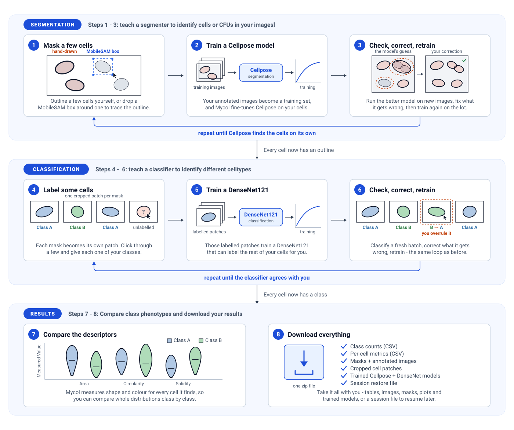
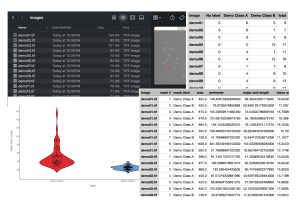

Mycol helps you build, deploy and verify automated image analysis pipelines in minutes
From raw microscopy images to trained models and quantitative cell-level insights - each stage builds on the last.
Mycol guides you through a clear, step-by-step pipeline - from raw microscopy images to trained AI models and quantitative cell-level insights. Each stage builds on the last, but you can enter or exit at any point depending on what you already have.
Start by uploading your images and any existing masks or models. Move to the annotation page to segment cells automatically with Cellpose or SAM2, correct any errors interactively, and classify cells manually or with a DenseNet model. If you want better automated results, use the training page to fine-tune a Cellpose or DenseNet model on your own annotated data - newly trained models feed directly back into annotation. Finally, the analysis page lets you visualize and export cell population statistics across classes and experiments. At any point you can download your annotated data, trained models, or a full session restore file for reuse and publication.

Upload Your Data
Where your analysis begins. Everything goes into one uploader and Mycol sorts it out.
Upload the key files Mycol will use in later steps:
- Images (required) - the microscopy or sample images you want to analyze.
- Masks (optional) - segmentation masks that outline cells or regions of interest.
- Cellpose model (optional) - a trained model for automatic cell segmentation. Learn about Cellpose →
- DenseNet model (optional) - a classification model for labeling segmented cells. Learn about DenseNet →
- Cellpose settings CSV (optional) - the inference hyperparameters saved alongside a downloaded model, which reapply a previous segmentation setup without re-entering each value by hand.
- Saved session (optional) - a session zip downloaded earlier, which restores your images, masks, labels, models and settings exactly as you left them.
Images and masks are paired by filename, and model files are identified from their contents. Once uploaded, a summary table shows which images have masks linked, how many cells are highlighted in each, and any models you've provided.
No data of your own to hand? Use demo data loads an example set so you can try the full workflow first.
Every control on this page →Segment and Classify Your Cells
The central workspace, where annotated datasets are produced.
Here you can:
- View images overlaid with their associated cell masks.
- Generate new masks automatically with Cellpose or SAM2.
- Manually edit or correct masks - add, remove, split, join, or adjust individual cells.
- Classify cells using an uploaded DenseNet model for automated classification, or by clicking directly on cells in the image for manual labeling.
Once ready, download your dataset - images, masks and tabulated cell counts - or move on to phenotypic comparison or training new models.
Every control on this page →Train Your Own Analysis Models
Use the datasets you've created to fine-tune models that suit your own images.
Choose from:
- Cellpose segmentation model - improve or customize how cells are automatically detected and outlined.
- DenseNet classification model - fine-tune how cells are categorized based on their features.
Sensible default parameters are provided, but you can also run hyperparameter optimization to explore how different settings affect model performance.
After training, performance plots show training progress, accuracy, loss, and validation metrics. Trained models can be used immediately in the annotation page or downloaded for reuse.
Every control on this page →Get to Know Your Data
Explore and summarize the quantitative results of your analyses.
Create and download plots of cell population statistics - such as cell area, perimeter, and other morphological features - grouped by cell class.
Select which classes and characteristics to include, and Mycol generates plots that help you:
- Compare cell features across classes or conditions.
- Identify trends in cell populations across multiple images or experiments.
- Quantify variability and relationships among measured features.
Downloadable results include per-image cell counts by class, a per-cell metrics table holding every shape and colour descriptor for every segmented cell, and publication-ready plots.
Every control on this page →Export Your Results
Package and export everything produced during your session.
Choose exactly what to include before preparing the zip:
- Images & Masks - export your images with colored mask overlays, optional per-image class count labels, intensity-normalized images, and cropped cell patch images for every individual segmented cell.
- Tables - CSV files with per-image cell counts and full cell metrics (area, circularity, elongation, and more) for every cell.
- Trained Models - fine-tuned Cellpose or DenseNet weights together with the training dataset, loss curves, and evaluation metrics.
- Session Restore - save a zip you can re-upload to pick up exactly where you left off in a future session.
Click Prepare Download to build the zip, then Download Files to save it locally.
Every control on this page →